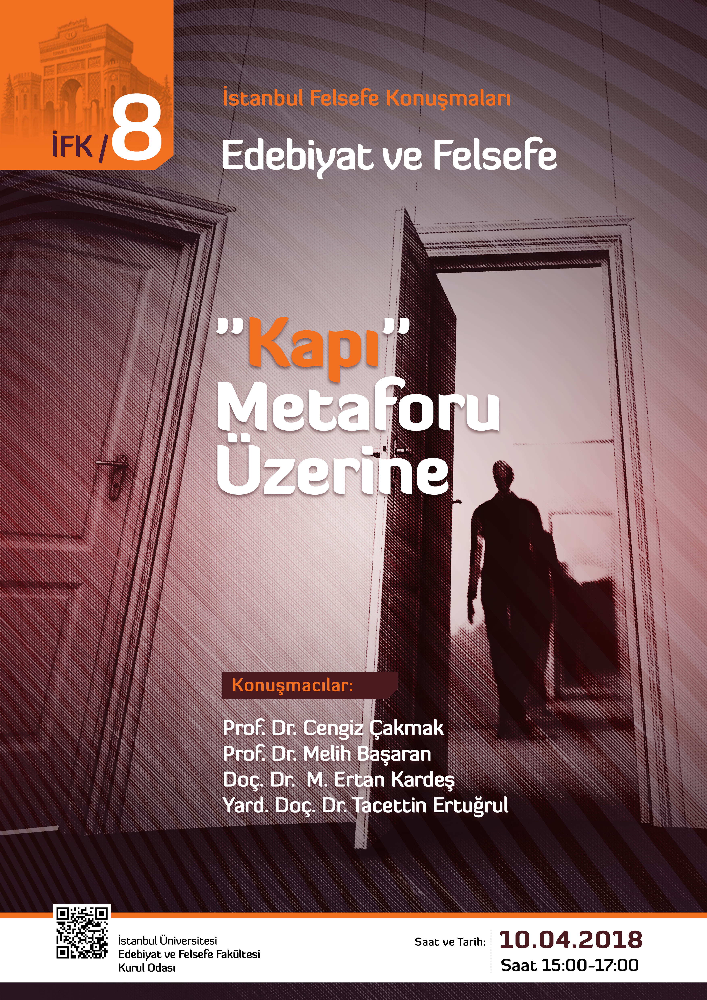
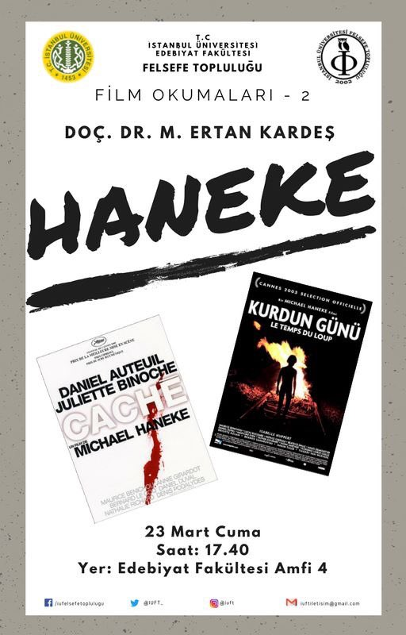
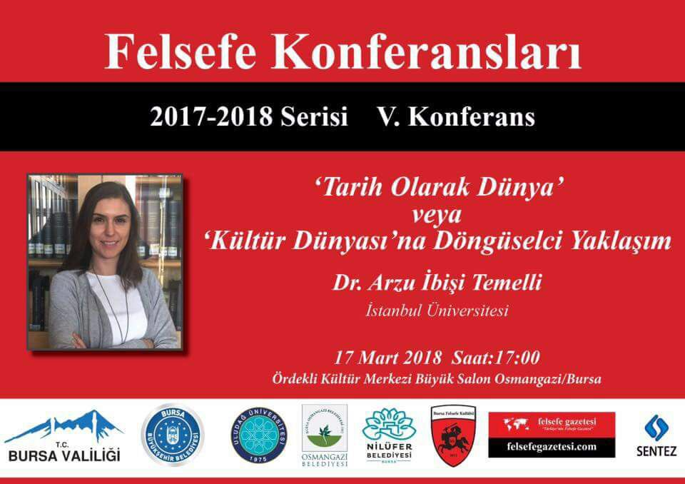
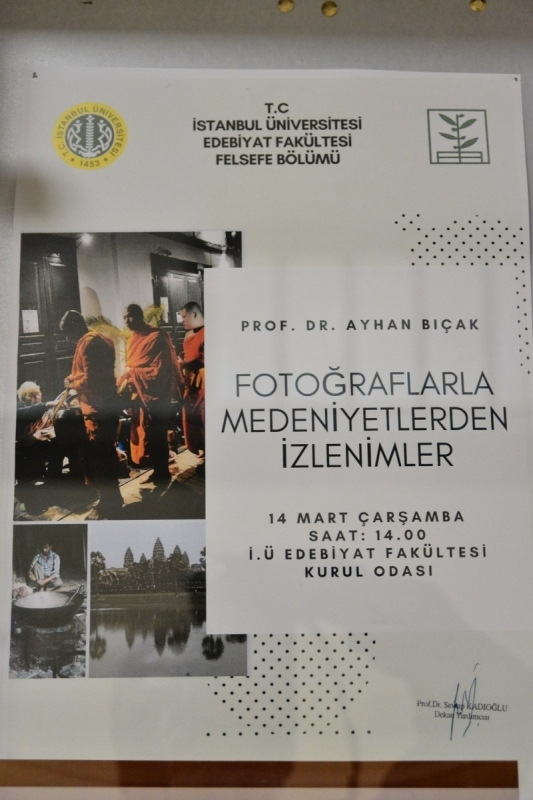

Ana Sayfa
İstanbul Üniversitesi Ana Sayfa
Edebiyat Fakültesi Ana Sayfası
Hakkımızda
Bölüm Tarihçesi
Bölüm Tanıtım Sunumu
Akademik
Bölüm Başkanı: Prof. Dr. Ayhan Bıçak
Anabilim Dalları
Felsefe Tarihi Anabilim Dalı
Mantık Anabilim Dalı
Sistematik Felsefe Anabilim Dalı
Türk-İslam Düşüncesi Tarihi Anabilim Dalı
Akademik Kadro
Öğrenci
Ders Programı
Akademik Takvim
Doktora Yeterlilik Kriterleri
Öğrenci Otomasyon Sistemi
E-Öğren (Ortak Dersler)
ERASMUS Programı
ERASMUS Anlaşma Sorgulama
FARABİ Programı
MEVLANA Programı
Felsefe Topluluğu
Bilgi İşlem
Bilgi İşlem Daire Bşk.
Personel E-Posta
Öğrenci E-Posta
Eduroam Kablosuz İnternet
İletişim
İstanbul Üniversitesi
Sıkça Sorulan Sorular

“Kapı” Metaforu Üzerine (10 Nisan)

Doç. Dr. M. Ertan Kardeş (23 Mar)

Dr. Öğr. Ü. Arzu İbişi Temelli (17 Mar)

Prof. Dr. Ayhan Bıçak (14 Mart)
Geri
İleri
Duyurular
“Kapı” Metaforu Üzerine (10 Nisan)
16 Mart 2018
Doç. Dr. M. Ertan Kardeş (23 Mar)
16 Mart 2018
Dr. Öğr. Ü. Arzu İbişi Temelli (17 Mar)
15 Mart 2018
Prof. Dr. Ayhan Bıçak (14 Mart)
13 Mart 2018
Ders Programı
01 Şubat 2018
Prof. Dr. Şafak Ural’a Saygı Toplantısı
22 Ocak 2018
Abdessamed Taibi
17 Ocak 2018
İSEDER Atölyeleri
12 Ocak 2018
VII. Mantık Çalıştayı Kitabı yayımlandı
29 Aralık 2017
Dar Kapıdaki Mesih
19 Aralık 2017
Ontoloji Tartışmaları 2
27 Kasım 2017
Carl Schmitt: Savaş ve Felsefe (2 Kas)
26 Ekim 2017
Tarihsel Coğrafyadan Kültürel İzler
24 Ekim 2017
İslam Araştırmalarına Giriş Seminerleri
22 Ekim 2017
Doç. Dr. Mehmet Günenç: Ontolojisizlik
22 Ekim 2017
Uluslararası İstanbul Felsefe Kongresi
26 Eylül 2017
On Ideas: from Plato to Husserl
26 Eylül 2017
Arş. Gör. Dr. Esma Kayar
07 Eylül 2017
Doç.Dr. Uğur Ekren: Wagner ve Felsefe
27 Temmuz 2017
Özel Öğrenci Programı Mülakatı
07 Temmuz 2017
Arş. Gör. Dr. Elife Kılıç
06 Temmuz 2017
Arş. Gör. Dr. Filiz Didem Çoban Sarı
06 Temmuz 2017
Ertan Kardeş: Otorite Krizi Çağı
20 Haziran 2017
Dr. Mehmet Fatih Deniz
13 Haziran 2017
Lisansüstü Sınav/Mülakat (15 Haziran)
11 Haziran 2017
Dr. Kamuran Gökdağ
07 Haziran 2017
Abdurrahman Aliy: Felsefenin Tanrısı
07 Haziran 2017
Feza Gürsey Mantık Yaz Okulu 2017
06 Haziran 2017
M. Cüneyt Kaya: BİR ve ÇOK
06 Haziran 2017
VII. Mantık Çalıştayı (29-30 Haziran)
22 Mayıs 2017
Yandal & Çift Anadal Toplantısı
16 Mayıs 2017
İstanbul Felsefe Seminerleri (Bahar)
14 Mayıs 2017
Avicenna Reloaded
10 Mayıs 2017
Politik Felsefe & W. Benjamin (9 Mayıs)
29 Nisan 2017
Felsefe Topluluğu 28. Öğrenci Kongesi
28 Nisan 2017
Üstad Filozof Teoman Duralı’ya Saygı
20 Nisan 2017
Dr. Muhammet Gözütok
19 Nisan 2017
Doç. Dr. Y. Yüksel’in Kitabı Yayımlandı
11 Nisan 2017
Doç. Dr. M. Cüneyt Kaya (10 Nisan)
10 Nisan 2017
Doç. Dr. Özgüç Güven (13 Mart)
05 Mart 2017
Prof. Dr. Nihat Keklik vefat etti
01 Mart 2017
Prof. Dr. İhsan Fazlıoğlu (21 Şubat)
17 Şubat 2017
Kant’ın Tanrı Anlayışı (23 Şubat)
14 Şubat 2017
Avrupa’da Yüksek Öğrenim (14 Şub)
14 Şubat 2017
VI. Mantık Çalıştayı Kitabı
15 Ocak 2017
İSEDER Sertifika Programları
11 Ocak 2017
Erteleme: Tanrı Hakkında Konuşmanın İmkânı (Doç. Dr. Abdurrahman Aliy)
02 Ocak 2017
İstanbul Felsefe Seminerleri
02 Ocak 2017
Terör Saldırısını Kınıyor ve Lanetliyoruz
01 Ocak 2017
Prof. Dr. Mahmut Kaya: Aristoteles
13 Aralık 2016
İstanbul Üniversitesi Edebiyat Fakültesi
Ordu Cad. No. 196, 34459 Laleli / İstanbul
Tel: 0 (212) 440 00 00